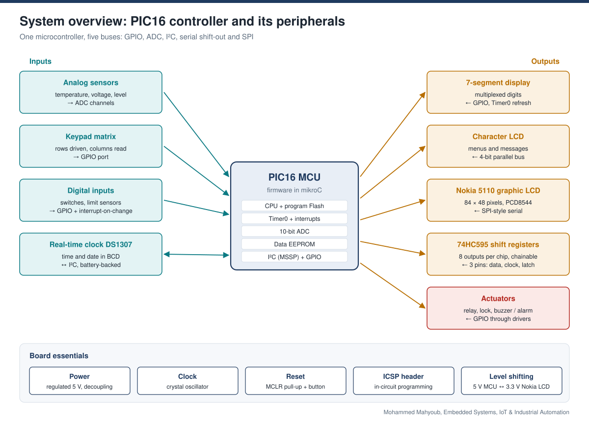
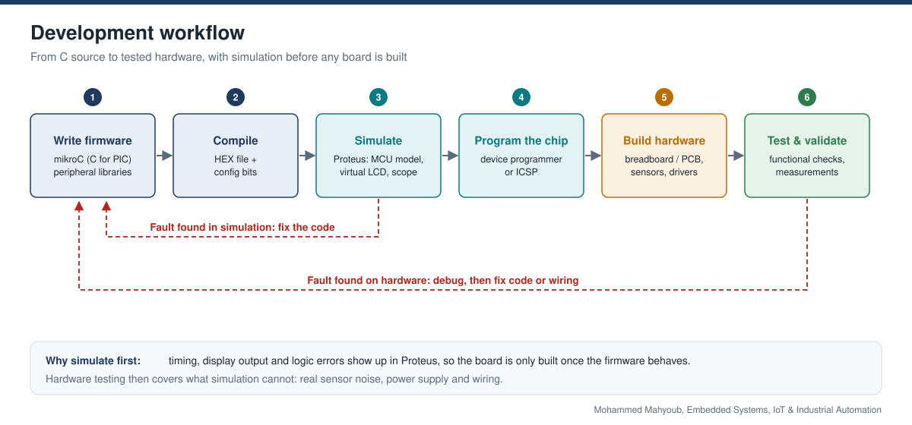
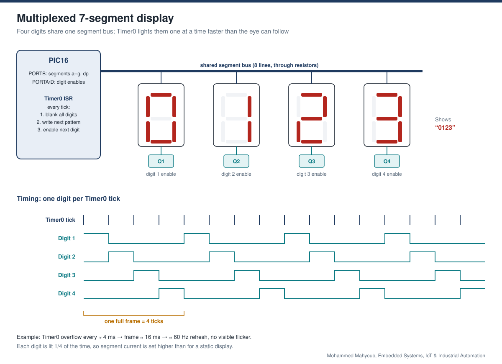
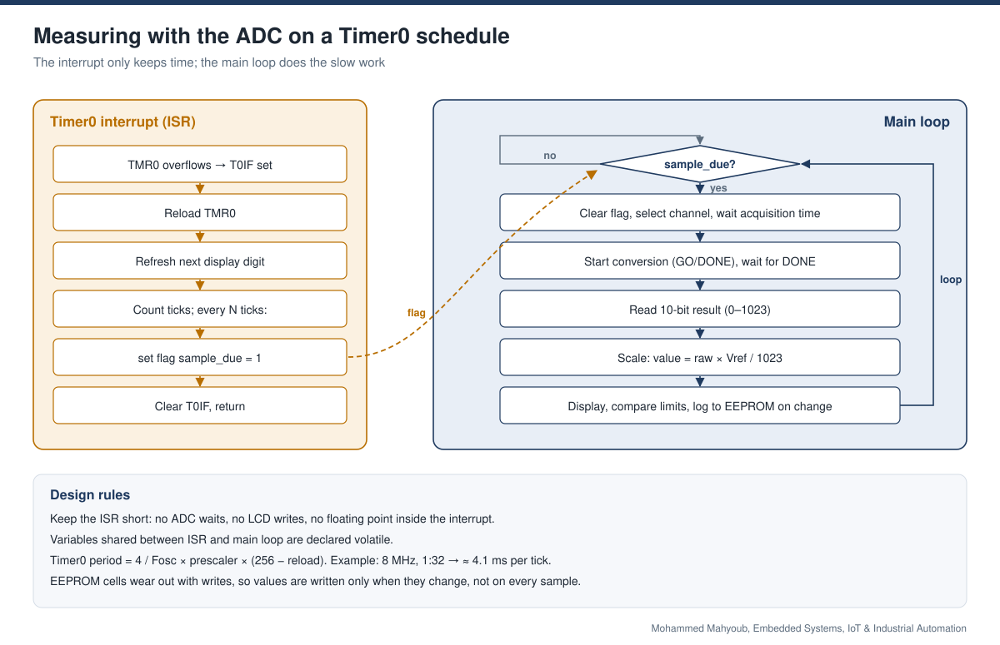
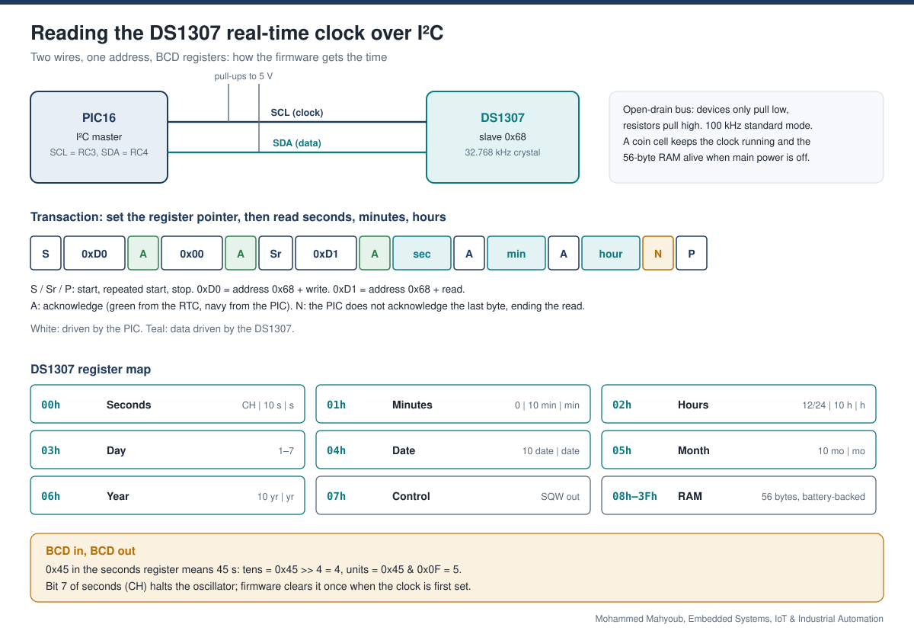
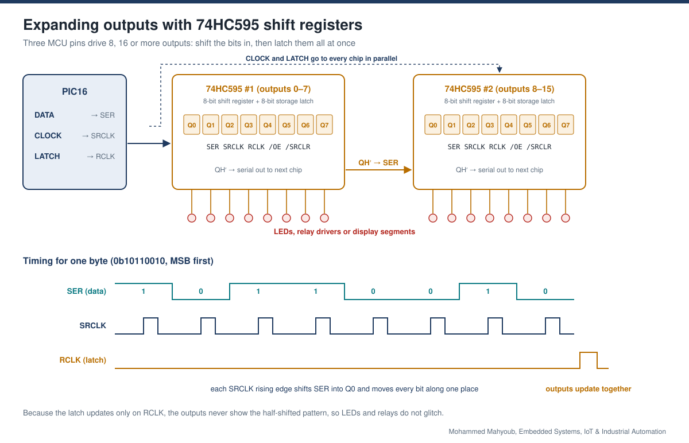
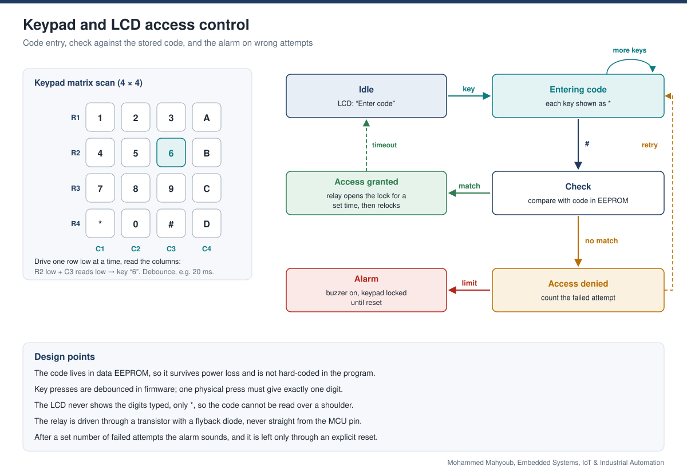
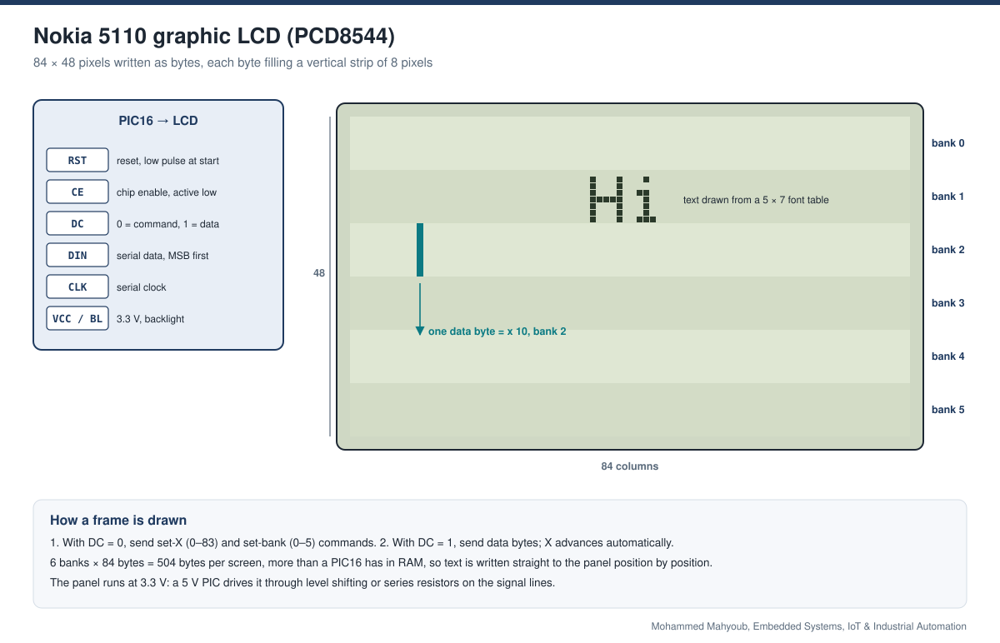
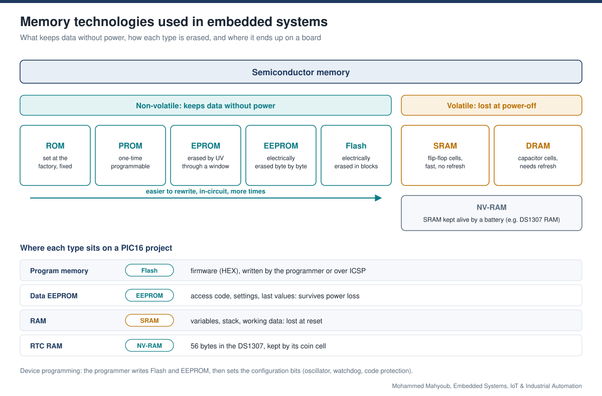

Embedded Systems · Firmware · IoT
Embedded Systems & IoT — PIC Firmware and Peripheral Integration
Developed PIC16 firmware and hardware interfaces for timed sensing, displays, real-time clocks, output expansion and access control, using mikroC and Proteus during development.
Implemented Project
System architecture

Implementation scope
PIC16 firmware implements timed acquisition and peripheral interfaces. Timer0 schedules display refresh and measurements, I²C connects the DS1307 clock, and serial interfaces drive shift registers and the graphic LCD.
Engineering approach
These are related firmware implementations and peripheral techniques. PLC batching and the dedicated EEPROM storage system have their own case studies and are not presented as parts of one PIC circuit.

Visual documentation
Original project posters and interface screenshots are identified separately from explanatory source diagrams. The gallery documents this project only. Open any figure to inspect it at full available resolution.

















